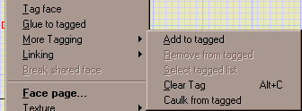
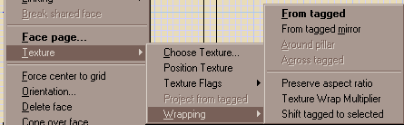

Tag Side
Updated 08 May 2003
- QuArK Information Base
- 2. Map editing
- 2.5. Plug-in descriptions
|
|
Tag Side
Updated 08 May 2003
|
Upper levels: - QuArK Information Base - 2. Map editing - 2.5. Plug-in descriptions |
|
2.5.1. Tag Side |
[ - - ] |
The Tag Side plugin performs a variety of functions revolving around the 'tagging' of a face, to use as a basis for other operations, such as snapping another face into alignment with it, or wrapping a texture from it onto other faces. |
|
Index |
|
Basic Tag and Glue |
tiglari - 20 Feb 2001 | [ Top ] |
|
 The most basic operation is to first tag a face, with the right mouse menu for faces, and then select another face, and click on the 'glue to tagged' command on the right mouse menu. The selected face will then snap to the position of the tagged one. This command is useful for getting things into alignment, especially off the grid. Below the 'Glue to Tagged' item is a submenu 'More Tagging', which offers additional commands:
So far we've only looked at the face menu. Tag Side also puts commands on the speedmenus for other things, such as vertices. Vertices have Tag Point and Glue to Tagged, and vertices can be glued to each other and to faces, and vice-versa. For example, if you have a downward-sloping brush that is functioning as a ramp, and you want to align level surfaces precisely with the top and bottom of the ramp, you can tag the upper vertices, and glue the top of a brush to them. Empty points in space can also be tagged (the background menu), tho I'm not sure at this point how useful this really is. A more complicated command on the vertex menu is 'align face to tagged'. If you tag a face, then select a side (left mouseclick its handle), then the 'align selection to tagged' command will appear on the speedmenu of the face's vertices. This will swivel the face around the vertex so that it is parallel to the tagged face. This can be used to align the ceiling of a sloping tunnel exactly parallel to the floor. Finally there are some commands on the speedmenu for polys:
|
|
Texture Wrapping |
tiglari - 08 May 2003 | [ Top ] |
|
 The next submenu we'll look at is concerned with 'texture wrapping', fitting textures across more than one face without seams; perhaps with a bit of fitting as well. The commands of the Texture Wrapping submenu are:
There are also two options on the menu, the useful one is 'preserve aspect ratio'; if this is checked, the fitting operations resize the textures evenly in all dimensions to make them fit in the pillar wrap and fit across tagged operations; otherwise they are just stretched in the direction required. The other one is 'shift tag to selected', which might causes the selected tagged to become the tagged face in the Wrap texture from tagged operation. |
|
Linking |
tiglari - 20 Feb 2001 | [ Top ] |
|
Copyright (c) 2009, GNU General Public License by The QuArK (Quake Army Knife) Community - http://quark.sourceforge.net/ |
[ - Top - ] |